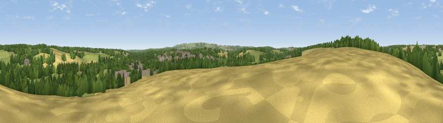

Viewpoint near Hungerford
#38663 in England · top 81% of its area beats it · near HungerfordWhere it is
The exact computed spot (SU 33025 69325). Click the marker for map links.
The view, rendered

A 360° render of this exact spot computed from the terrain model, tree cover and land cover — summer colours, afternoon light, calibrated against photographs of famous viewpoints. Real trees, hedges and buildings will differ in detail.
The panorama
Grey silhouette: terrain skyline in each direction (720 bearings, Earth curvature and refraction included). Dashed green: skyline with trees (+15 m) and buildings (+8 m) as obstacles. Blue strip: how far the ground is visible on each bearing.
Where the view opens
Wedge length = distance to the farthest visible ground on that bearing (vegetation-aware). Rings at 10, 25 and 50 km.
What fills the view
40% grassland · 32% woodland · 19% cropland · 9% built-up
Angular shares of the visible panorama (visual magnitude), not map area. Landscape diversity 0.55 (0–1 Shannon).
Key numbers
More beautiful places nearby
The staircase of upgrades: each row has a higher view potential than everything closer. Driving times are estimates from straight-line distance, calibrated against real road routing — check an actual route before setting out.
| Place | Direction | Drive | Score |
|---|---|---|---|
| Viewpoint near Little Bedwyn | SW · 4 km | ~9 min | 36.9 |
| Viewpoint near Chisbury | SW · 6 km | ~13 min | 37.6 |
| Viewpoint near Kintbury | ESE · 7 km | ~14 min | 47.1 |
| Viewpoint near Ham | S · 7 km | ~15 min | 65.9 |
| Viewpoint near Ham | SSE · 8 km | ~15 min | 67.2 |
| Inkpen Hill | SSE · 8 km | ~16 min | 69.8 |
| Gallows Down | SSE · 8 km | ~16 min | 75.6 |
| Martinsell viewpoint | WSW · 16 km | ~28 min | 77.3 |
51.42198, -1.52644 · source: screening · position refined by local search. Computed location — check access rights before visiting.